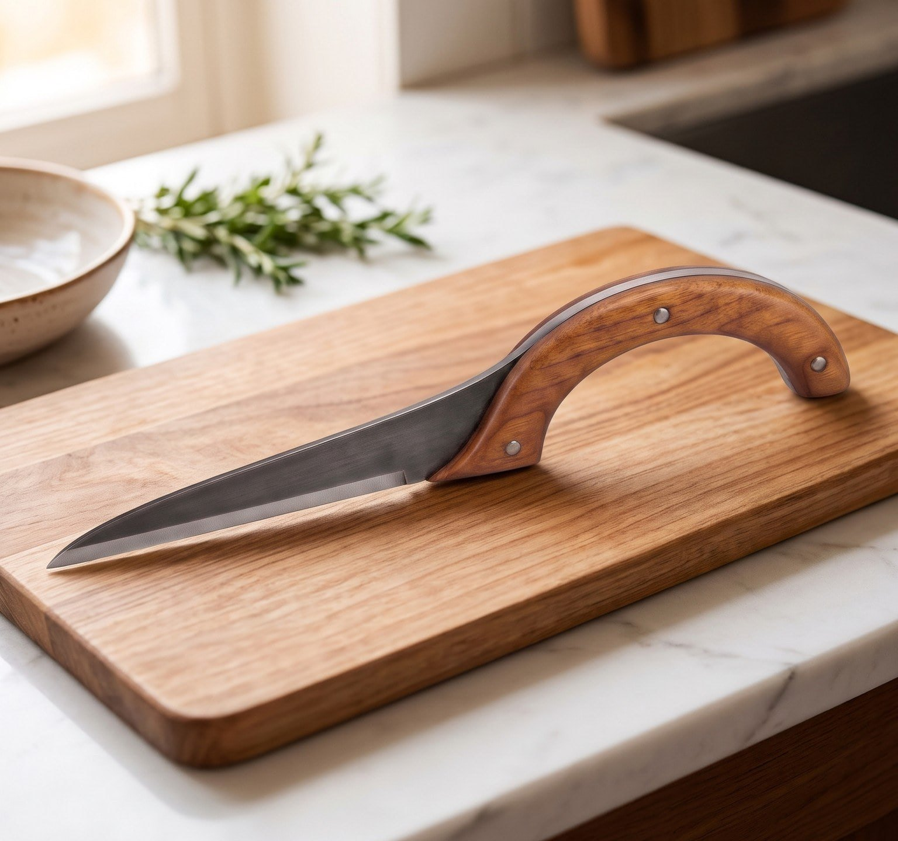
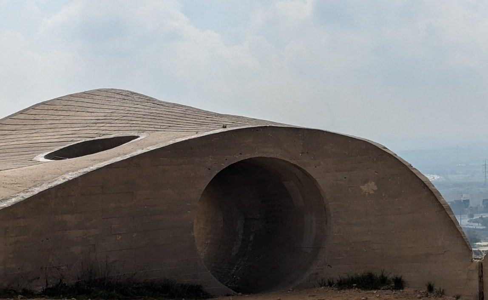
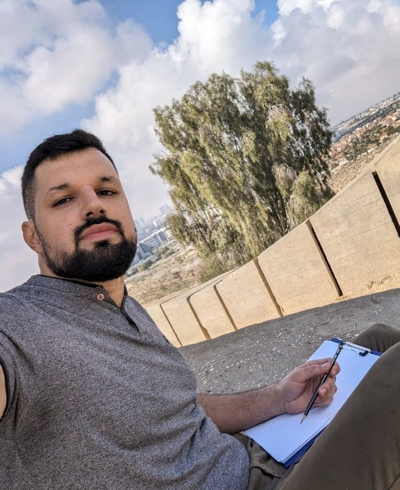
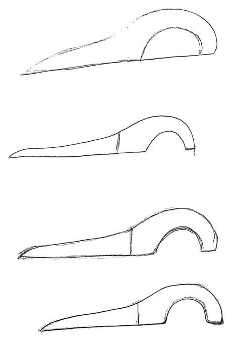

סכין מטבח
כלי מטבח | חומר וצורה

הרעיון
סכין שעומדת זקופה בפני עצמה, וידית בצורת קשת שהופכת אותה מכלי עבודה לאובייקט עיצובי.
חומר ומבנה
גוף פלדה רציף נמשך מחוד הלהב ועד קצה הקשת, ושני לוחות עץ עוטפים אותו משני צדדיו, מקובעים אליו בפינים מתכתיים. הפלדה מעניקה לקשת את חוזקה, והעץ מוסיף מגע חם ואחיזה נוחה, בשפה החומרית של סכין שף קלאסית.

אחיזה
הקשת מרוממת את כף היד מעל משטח העבודה, כך שפרקי האצבעות אינם פוגעים בקרש בזמן החיתוך.
האצבעות עוטפות את הקשת מבפנים, והאגודל נשען על גב הידית. כך נוצרת אחיזה סגורה ויציבה לאורך כל תנועת החיתוך.
השראה
אנדרטת חטיבת הנגב, דני קרוון
קשת הבטון והפתח העגול שבבסיסה תורגמו לצורת הידית. הסקיצות מתעדות את המעבר מהצורה האדריכלית לאובייקט שנאחז ביד, מרעיונות ראשוניים ועד פרופיל סופי.





סקיצות